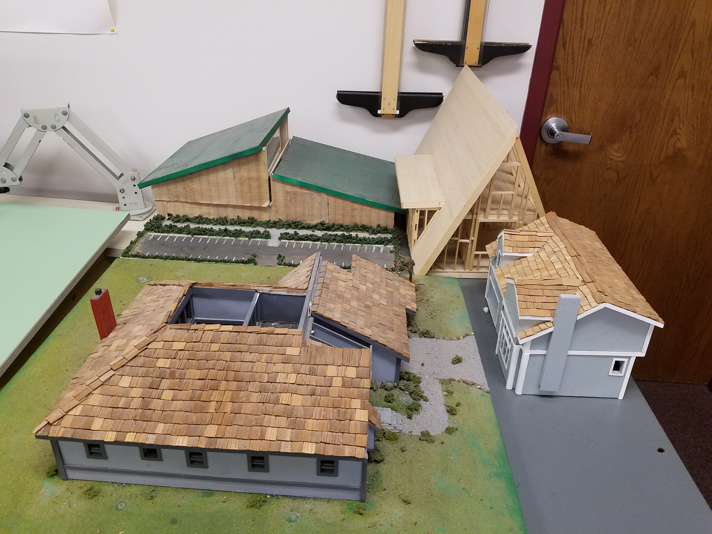
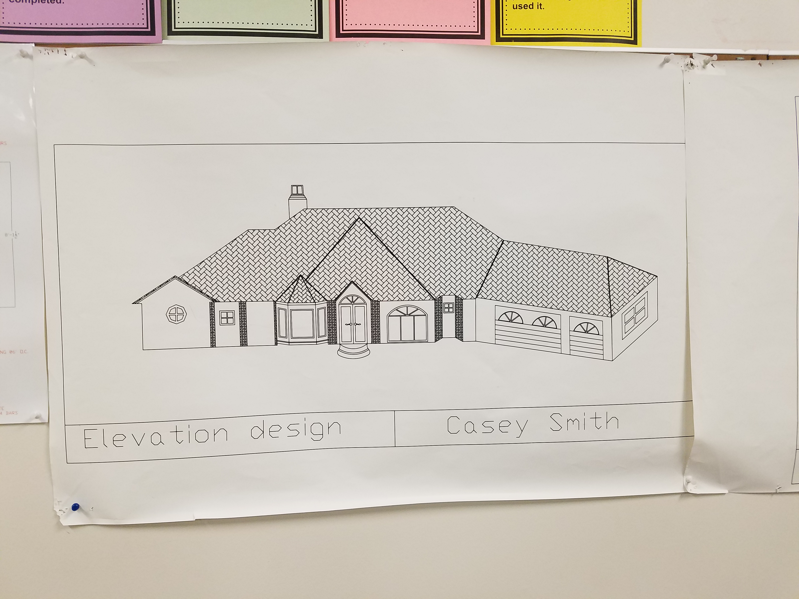
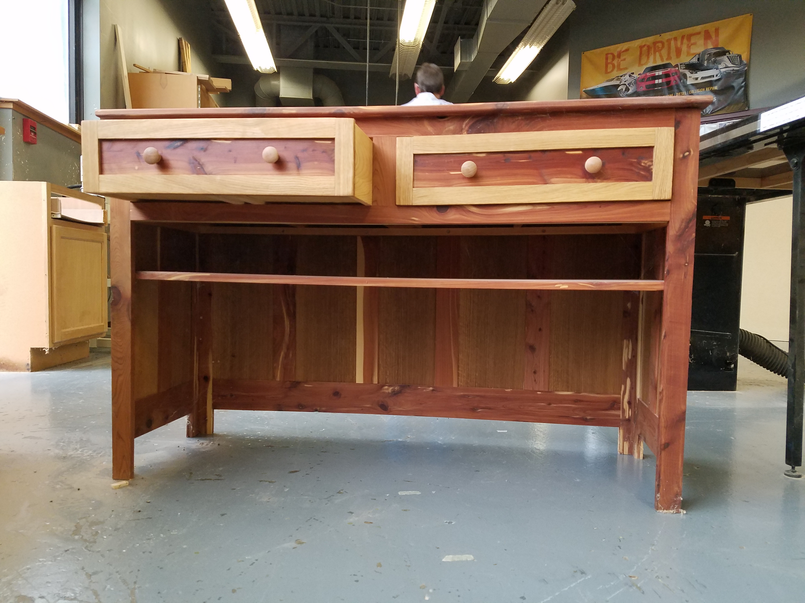

This is an Engineering Drafting / CAD II project in which a physical model consisting of several
buildings are meshed together.

This student sketch for Architecture Design I depicts a large home with
intricate details including: a tiled roof, three garages, and multiple windows.

This project is for Research and Design for Pre-Construction I and consists of a rose
colored desk with two rose colored drawers.

This Research and Design for Pre-Construction II project is a wooden shelving unit
used to hold books and other objects.